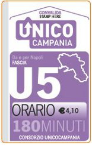
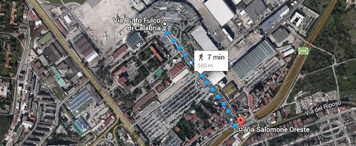
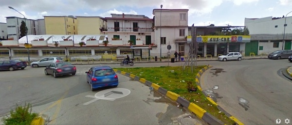
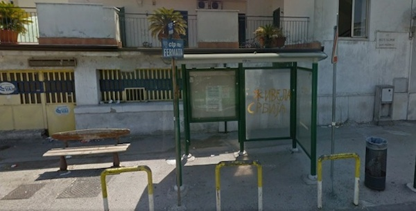

Napoli Airport - Avellino (Bus)
If you are planning to come to Avellino from Napoli Airport by bus, you may find this useful:
- After the baggage claim, exit the security area.
- You can buy the bus ticket for Avellino from any bookshop/newsstand in the terminal.
The ticket is called "Unico U5" and costs €4.10.

- Exit the terminal, and walk for about 600m to the end of the road:

Until you get here:

-
Wait next to this sign:

-
Note that the bus is coming from downtown Napoli and makes a stop at the airport, on the way to Avellino.
The company is called A.Ir. (Autotrasporti Irpini) – on the front of the bus, you’ll see the sign “Avellino via Autostrada”. - Bus timetables are available in Italian and English
[Print this page in PDF]